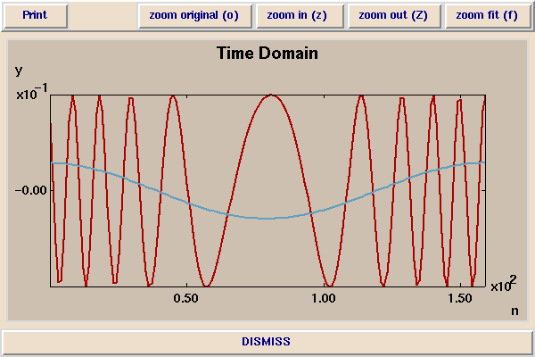
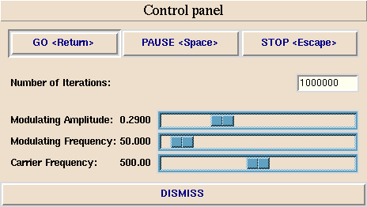
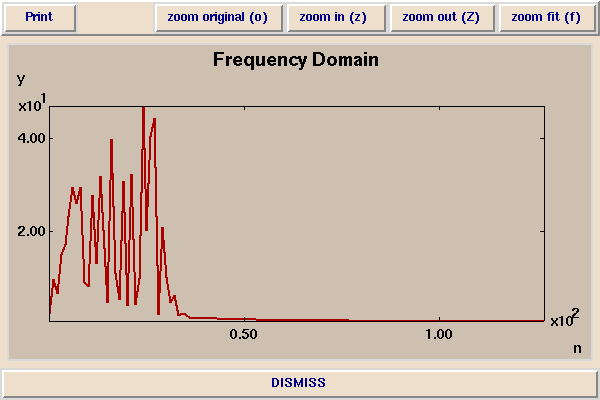

In this demonstration, you observe the effect of having one sinusoid (the modulating waveform) determine the frequency of another (the carrier waveform). This is the technique used in FM radio transmission, where the carrier frequency ranges from about 88 MHz to about 108 MHz (depending on the station). One MHz is one million cycles per second. For FM radio transmission, the modulating signal is an audio signal, which has frequency components that range from about 50 Hz to about 15 kHz. One kHz is one thousand cycles per second.
Here is a picture of a modulating waveform (in blue) affecting the frequency of a carrier (in red):

When the modulating waveform is near its peak (at the left and the right), the frequency of the carrier is highest. When the modulating waveform is at its lowest (in the center), the frequency of the carrier is at its lowest. The job of an FM radio receiver is to extract the modulating waveform (the blue) from the carrier signal (in red). How this is done is covered in EE121.
The above signals were generated with the following control panel:

The frequency content of the above modulated signal is amazingly complex:

This suggests that FM modulation might be a good way to generate interesting musical sounds. Indeed, this observation was first made by John Chowning (of Stanford), who patented the idea. This patent has run out, but it is reputed to be one of the biggest moneymakers in patent history. Almost every musical synthesizer has used this technique.
In FM radio signals, we do not listen to the modulated carrier. It would not be audible anyway, since 88 MHz is well above the range of frequencies that we can hear (which peaks at 20 kHz). However, if we lower the carrier frequency into the audio range, and listen directly to the modulated waveform (rather than an extracted modulating signal), we do indeed get very interesting sounds. This is how the sounds in the synthesizer demo were generated.